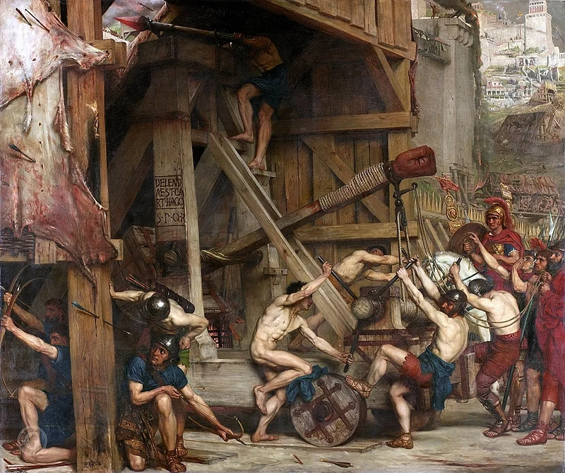

Welcome to Wikipedia,
the free encyclopedia that anyone can edit.
6,599,896 articles in English
From today's featured article
The Third Punic War was the third and last of the Punic Wars between Carthage and Rome, and lasted from 149 to 146 BC. The war was fought in what is now northern Tunisia. In 149 BC anti-Carthaginian factions in Rome manufactured a pretext for war. The Carthaginians surrendered all of their weapons, but the Romans pressed on to besiege the city of Carthage (siege engine depicted). The Romans suffered repeated setbacks. A new Roman commander took over in 148 BC, and fared equally badly. Scipio Aemilianus was appointed commander in Africa for 147 BC; he tightened the siege and prevented supplies from entering. He then destroyed Carthage's field army and forced the remaining pro-Carthaginian towns to surrender. In spring 146 BC the Romans launched their final assault, systematically destroying the city and killing its inhabitants; 50,000 survivors were sold into slavery. The formerly Carthaginian territories became the Roman province of Africa. (This article is part of a featured topic: Punic Wars.)
Did you know...
.jpg)
- ... that diplomat Lê Thị Tuyết Mai (pictured) studied at three different universities in three different countries?
- ... that the feedback sounds in the Yardbirds' "Happenings Ten Years Time Ago" were later "swiped" by Jimi Hendrix?
- ... that the first day of filming of the psychological thriller Farah coincided with the beginning of the 2019 Lebanese protests?
- ... that the Douglas branch's Roosevelt station went from having more than 700,000 riders in 1910 to only 50,000 in 1950?
- ... that Nasser Abu Hamid had five brothers serving life sentences in addition to him?
- ... that the 2022 Quick Lane Bowl had to use a substitute referee after the original referee's flight was canceled?
- ... that Robert Spencer Finkbine spent 13 years as the superintendent of construction of the Iowa State Capitol?
- ... that the developers of Among Us VR said that the game could have been too spooky?
In the news
- Supporters of former Brazilian president Jair Bolsonaro invade the National Congress, the Supreme Federal Court and the Palácio do Planalto.
- Michael Smith (pictured) wins the PDC World Darts Championship.
- Croatia adopts the euro and joins the Schengen Area.
- Pope Emeritus Benedict XVI dies at the age of 95.
- Brazilian footballer Pelé dies at the age of 82
On this day
- AD 9 – The Western Han dynasty of China ended after the throne was usurped by Wang Mang, who founded the Xin dynasty.
- 1475 – Moldavian–Ottoman Wars: Stephen the Great led Moldavian forces to defeat an Ottoman attack under Hadım Suleiman Pasha near Vaslui in present-day Romania.
- 1863 – Service began on the Metropolitan Railway (construction depicted) between Paddington and Farringdon Street, today the oldest segment of the London Underground.
- 1923 – Lithuanian residents of the Klaipėda Region began a revolt, ahead of a League of Nations decision on their future which they expected to be against their interest.
- 2007 – A general strike began in Guinea as an attempt to force President Lansana Conté to resign, eventually resulting in the appointment of two new prime ministers